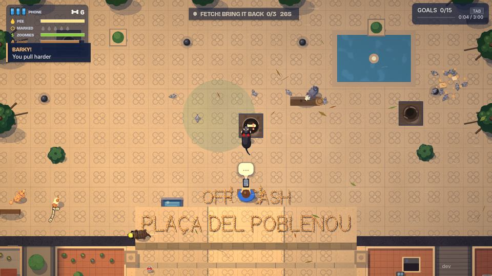

Rambla del Poblenou
Plane trees, horchata and breeze
A morning sea breeze down Rambla del Poblenou's flower-tile central promenade under tall plane trees, past tiled horchata kiosks and café terraces into Plaça de Prim's compass paving before palms lead out to Plaça del Poblenou. Wait staff cross with wobbling trays of horchata and fartons; pull clear in time and snatch the dropped treat.
- Off-leash stop
- PLAÇA DEL POBLENOU (Open plaça)
- Beat the clock
- Under 3:00
Screenshots



Goals (15)
- Mark 5 spots
- Have 4 good long sniffs
- Get the phone home without a scratch
- Get yourself home without a bump
- Get your business bagged
- Bring the ball back 3 times
- Scarf down 2 dropped snacks
- Sniff 3 Rambla kiosks
- Mark 3 plane trees
- Dodge the tipping horchata tray
- Land an x3 trick combo
- Snatch a farton off the horchata counter
- Spell LEASH
- Find the hidden pernil
- Beat the clock (under 3:00)